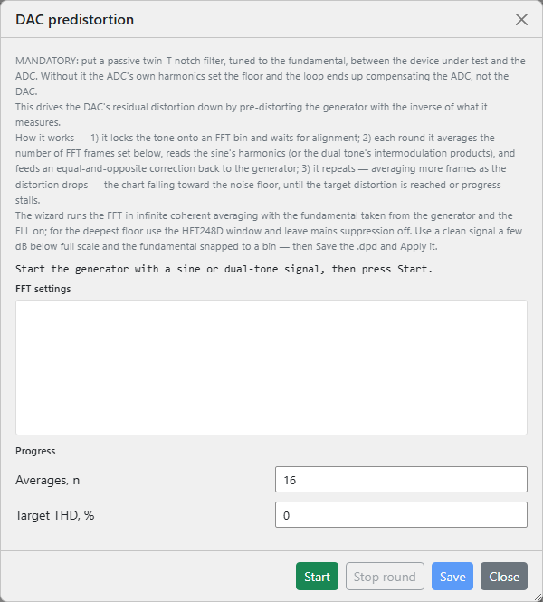

This page covers the wizard's controls. For why it works the way it does - the mandatory twin-T notch, why the fundamental is taken from the generator, how deep coherent averaging digs the harmonics out, and how the correction loop converges - see Theory of operation ▸ DAC pre-distortion.
The wizard drives down the DAC's own harmonic distortion so the
stimulus is cleaner than the converter can natively produce - what the
FFT analyser then shows is the device under test's
distortion, not the source's. It measures the DAC's harmonics behind a
notch filter and feeds an equal-and-opposite correction back into the
running generator, repeating in rounds until the distortion reaches your
target or stops improving. The result is saved as a .dpd
file and applied to the generator's
compensated waveforms.

Open it from the wand button in the FFT pane's toolbar (left of the record button, live pane only). Before you start, the generator must already be playing a sine, compensated sine or dual-tone signal - the loop cancels a single tone's harmonics or a two-tone signal's intermodulation products; any other waveform is rejected. The wizard runs the FFT in unbounded coherent averaging with the fundamental taken from the generator and the FLL on; for the deepest floor use the HFT248D window and leave mains suppression off, and drive a clean tone a few dB below full scale with the fundamental snapped to a bin.
| Control | What it does |
|---|---|
| Averages, n | FFT averages per round (minimum 10). Each round averages this many frames, then grows the count in proportion to how far the distortion has already dropped - so late rounds average far deeper than early ones. The mouse wheel steps by 10, the arrows by 1. |
| Target THD, % | Stop once the distortion reaches this value; 0 runs until it stalls. Accepts a sub-ppm figure (eight decimals), and is drawn as a red dashed line on the convergence chart so you can see the goal. |
| Start / Stop | Start begins the closed loop and becomes Stop while it runs. The loop also stops itself when it reaches the target or stalls. |
| Stop round | End the current averaging round now - apply the correction measured so far and move on to the next round. Use it when the spectrum has stopped improving and you don't want to wait out the remaining averages. Active only while a round is averaging. |
| Save | Write the best result to a .dpd file (enabled once a
round has completed). The suggested name encodes the tone
frequency, FFT size, overlap, window and the achieved distortion in
ppm. |
| Apply | Save becomes Apply once a file is written. Apply loads that
.dpd onto the running generator and switches it to the
compensated form (compensated sine / dual tone) with no
restart, then closes the wizard. |
| Close | Stop the loop, revert the generator to the plain tone (unless you applied a file) and reset the FFT statistics. |
An FFT settings block echoes the size, sample rate and window the run inherits from the FFT pane (read-only - set them there beforehand). A status line reports the live phase: aligning the tone onto its FFT bin, the round number and averages remaining, applying the correction, or settling after it.
The convergence chart plots each completed round's distortion on a logarithmic axis, with the markers spaced along the horizontal in proportion to how deeply that round averaged - so a long, deep late round occupies more of the trace than a quick early one - falling toward the red target line.
A progress block lists the live figures. For a single tone these are the round number, the live and last-round THD, the best THD so far, the running average count, and THD+N, SNR, SINAD, the fundamental and noise floor (dBV). For a dual-tone signal the loop minimises intermodulation, so the THD figures are replaced by IMD, best IMD and D+N.